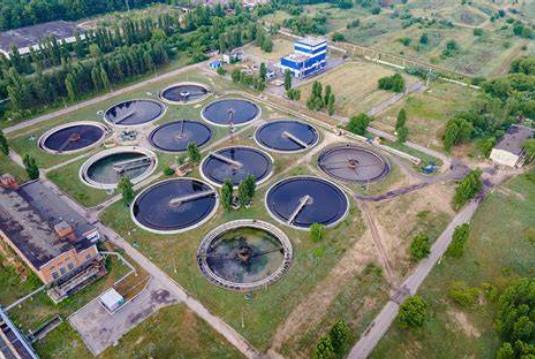

Loading Sustainability...
Handling toxic materials is high-stakes work. We take that responsibility off your hands with safe, certified disposal that protects your team and our environment.
In the textile sector, waste problems often stem from poor process control, inadequate housekeeping, and obsolete technology. We address these challenges with advanced collection and processing of chemical sludges and cotton flub.
Obsolete technology and unskilled labor leading to higher waste volume.

Manufacturing natural and synthetic pigments requires precise regulation. Our services manage hazardous components to protect local water bodies from industrial runoff and process residues.
Controlling pigment runoff and hazardous process residues.

The automotive sector generates massive quantities of paint and oil-soaked wastes. We provide industrial-scale removal of ETP sludges to maintain high-efficiency production lines.
100% compliant removal of toxic paint sludges.

Sensitive distillation and process residues require secure handling. We provide specialized disposal for expired drugs and bio-hazardous materials with full oversight.
High-security disposal and incineration of active ingredients.

As a major generator of hazardous materials, chemical plants benefit from our zero-liability disposal techniques for sludges and off-specification products.
Bulk management of toxic process residues and secondary raw materials.

Refinery operations are subject to strict RCRA Subtitle D regulations. We manage hydraulic fracturing waste and refinery sludges with a focus on safety and regulatory adherence.
Expertise in RCRA Subtitle D and fracking waste management.

Production high-fire risks are mitigated by our vacuum systems for safety. We process waste results from the mechanical mixing of pigments and solvents without chemical reactions.
Mitigating fire hazards and managing solvent-rich sludges.

Common Effluent Treatment Plants (CETP) allow small industries to manage wastewater collectively. We handle the resulting concentrated hazardous sludges from these shared facilities.
Cost-effective shared management for small-scale industry clusters.

Waste derived from fertilizers and pesticides often contains high dioxin concentrations and heavy metals like Arsenic and Lead. We ensure zero environmental leakage during processing.
Arsenic, Cadmium, Lead, and Dioxin concentration management.
Fast-moving consumer goods produce complex waste from harsh chemical compositions and plastic packaging. We provide a sustainable path for zero-waste manufacturing goals.
Managing single-use plastic waste and chemical compositions.

Join hundreds of leading industries that trust Go Green Eco Tech for reliable and compliant waste solutions.
Schedule a ConsultationJoin hundreds of leading industries that trust Go Green Eco Tech for reliable and compliant waste solutions.
Schedule a Consultation